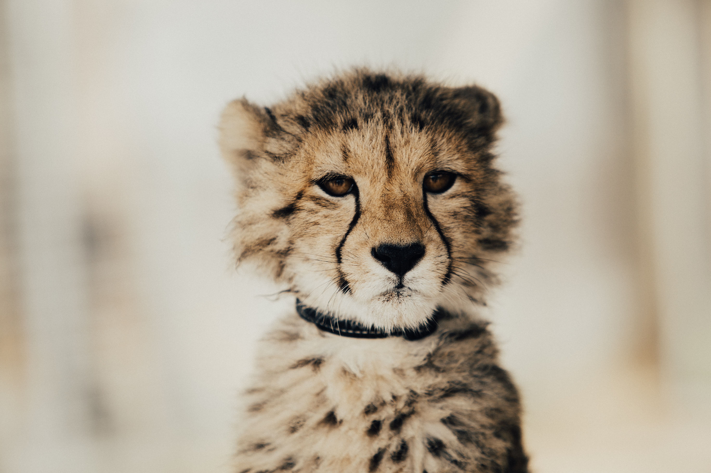
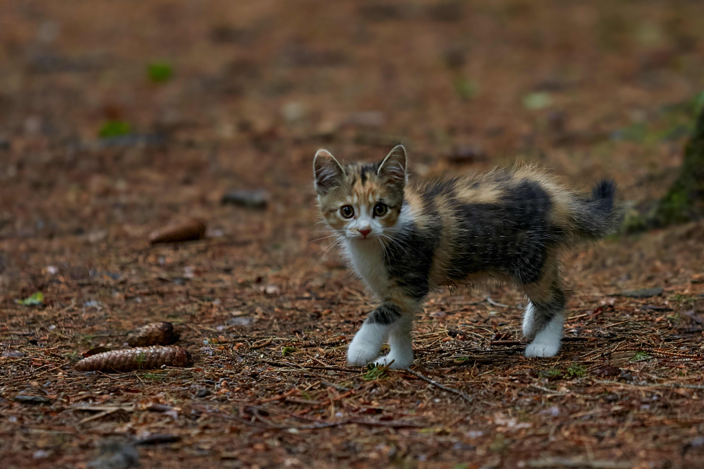

Venez découvrir nos animaux au coeur de Grenoble
Venez découvrir notre parc à quelques minutes de la ville. Au programme : la plus grande variété d’espèces de félins de la région. Mais ce n’est pas tout car vous pourrez rencontrer nos singes, nos lions et bien plus encore !
Consulter le catalogue des animaux

L'occasion de se ressourcer
Pour le plus grand confort des animaux et des visiteurs, notre aménagement d’exception vous donnera l’impression d’avoir quitté la ville pour une immersion totale au coeur de la nature. Ici, pas de route goudronnée ou de pollution : tout est fait pour vous dépayser. Les enfants adorent!

En quête d’une sortie insolite à proximité de Grenoble ?
Vous vous demandiez que faire à Grenoble un dimanche ? Le parc est l’endroit rêvé pour venir passer une journée en famille. Nous offrons des tarifs particuliers aux enfants. Les écoliers et étudiants ne sont pas en reste et profitent de tarifs réduits pour les sorties scolaires.
Voir les infos pratiques

Un émerveillement de tous les instants
Depuis sa création il y a 20 ans, le parc n’a cessé de grandir : il accueille aujourd’hui plus de 180 espèces d’animaux ! Venez découvrir comment le caméléon change de couleur, ou comment les écureuils font des réserves de nourriture, au cours de la visite pédagogique du parc. Assistez à l’impressionnant spectacles des otaries, et venez observer les nouveaux animaux du parc !